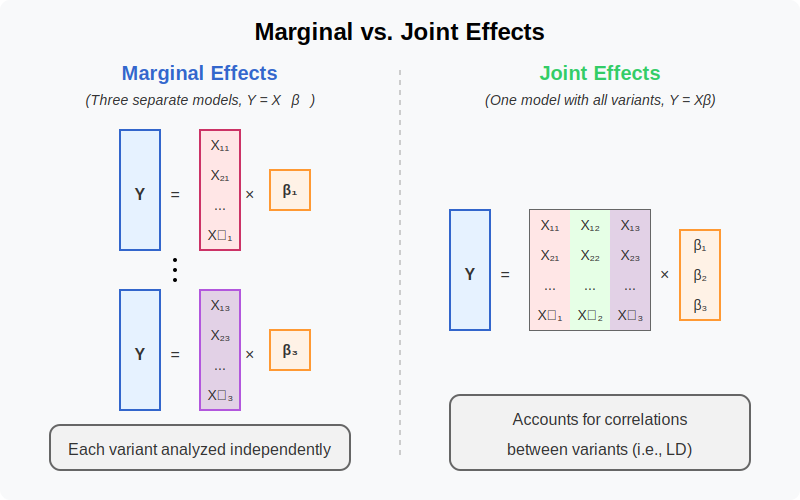

Marginal and Joint Effects¶
Marginal effects measure a genetic variant’s influence on a trait when considered alone, ignoring other variants, while joint effects measure each variant’s independent contribution when all variants are simultaneously included in the model, revealing their true effects after accounting for correlations (LD) between them.
Graphical Summary¶

Key Formula¶
In multiple marker linear regression, we extend the single marker model to incorporate multiple genetic variants:
Where:
\(\mathbf{Y}\) is the \(N \times 1\) vector of trait values for \(N\) individuals
\(\mathbf{X}\) is the \(N \times M\) matrix of genotypes for \(M\) variants across \(N\) individuals
\(\boldsymbol{\beta}\) is the \(M \times 1\) vector of effect sizes for each variant (to be estimated)
\(\boldsymbol{\epsilon}\) is the \(N \times 1\) vector of error terms for \(N\) individuals and \(\boldsymbol{\epsilon} \sim N(0, \sigma^2\mathbf{I})\)
Using ordinary least squares (OLS), we can derive the estimators for \(\boldsymbol{\beta}\) in matrix form:
Technical Details¶
Marginal Effect¶
In the section about OLS, we discuss the single marker linear regression, which estimates the marginal effect of each X.
The marginal effect of a genetic variant is its association with the trait when analyzed in isolation, without accounting for other variants:
Where \(\mathbf{X}_j\) is the column vector for the \(j\)-th variant.
Joint Effect¶
The joint effect of a genetic variant is its association with the trait when analyzed simultaneously with other variants, i.e., in the multiple marker model:
Where \(\hat{\beta}_{\text{joint},j}\) (the \(j\)-th element of \(\hat{\boldsymbol{\beta}}_{\text{joint}}\)) represents the effect of the \(j\)-th variant after accounting for all other variants in the model.
Key Differences Between Marginal and Joint Effects¶
Correlation Structure:
Marginal effects ignore correlations (linkage disequilibrium) between variants
Joint effects account for correlations between variants
Interpretation:
Marginal effect: The expected change in the trait associated with a unit change in the variant, not accounting for other variants
Joint effect: The expected change in the trait associated with a unit change in the variant, holding all other variants constant
Consistency:
When variants are uncorrelated, marginal and joint effects are identical
When variants are correlated, marginal and joint effects will differ
Joint effects can be smaller or larger than marginal effects, or even have opposite signs
Example¶
In this example we demonstrate a basic genetic association analysis for height across 5 individuals with 3 genetic variants.
Following the similar framework of simulating the genotype data and standardization, we further assign the phenotype (height) to each individual and standardize the trait value as well. Then we perform single-marker linear regression for each genetic variant using both the lm function and the explicit formula we obtained abouve to estimate the OLS effect size.
# Clear the environment
rm(list = ls())
# Define genotypes for 5 individuals at 3 variants
# These represent actual alleles at each position
# For example, Individual 1 has genotypes: CC, CT, AT
genotypes <- c(
"CC", "CT", "AT", # Individual 1
"TT", "TT", "AA", # Individual 2
"CT", "CT", "AA", # Individual 3
"CC", "TT", "AA", # Individual 4
"CC", "CC", "TT" # Individual 5
)
# Reshape into a matrix
N = 5 # number of individuals
M = 3 # number of variants
geno_matrix <- matrix(genotypes, nrow=N, ncol=M, byrow=TRUE)
rownames(geno_matrix) <- paste("Individual", 1:N)
colnames(geno_matrix) <- paste("Variant", 1:M)
alt_alleles <- c("T", "C", "T")
# Convert to raw genotype matrix using the additive / dominant / recessive model
Xraw_additive <- matrix(0, nrow=N, ncol=M) # dount number of non-reference alleles
rownames(Xraw_additive) <- rownames(geno_matrix)
colnames(Xraw_additive) <- colnames(geno_matrix)
for (i in 1:N) {
for (j in 1:M) {
alleles <- strsplit(geno_matrix[i,j], "")[[1]]
Xraw_additive[i,j] <- sum(alleles == alt_alleles[j])
}
}
X <- scale(Xraw_additive, center=TRUE, scale=TRUE)
# assign observed height for the 5 individuals
Y_raw <- c(180, 160, 158, 155, 193)
Y <- scale(Y_raw)
# Perform GWAS-style analysis: Test each SNP independently using OLS
p_values <- numeric(M) # Store p-values
betas <- numeric(M) # Store estimated effect sizes
for (j in 1:M) {
SNP <- X[, j] # Extract genotype for SNP j
model <- lm(Y ~ SNP) # OLS regression: Trait ~ SNP
summary_model <- summary(model)
# Store p-value and effect size (coefficient)
p_values[j] <- summary_model$coefficients[2, 4] # p-value for SNP effect
betas[j] <- summary_model$coefficients[2, 1] # Estimated beta coefficient
}
# Create results table
marginal_OLS_results <- data.frame(
Variant = colnames(X),
Beta = betas,
P_Value = p_values)
# The previous code calculated marginal effects (GWAS-style, one SNP at a time)
# Now let's calculate joint effects by including all variants in one model
# Multiple regression model including all variants simultaneously
joint_model <- lm(Y ~ X)
joint_summary <- summary(joint_model)
# Extract the joint effect coefficients and p-values
# Skip the intercept (first row)
joint_betas <- joint_summary$coefficients[2:(M+1), 1]
joint_p_values <- joint_summary$coefficients[2:(M+1), 4]
# Create results table for joint effects
joint_OLS_results <- data.frame(
Variant = colnames(X),
Beta = joint_betas,
P_Value = joint_p_values
)
rownames(joint_OLS_results) <- NULL
print("Single marker OLS Results:")
marginal_OLS_results
print("Multiple marker OLS Results:")
joint_OLS_results
[1] "Single marker OLS Results:"
| Variant | Beta | P_Value |
|---|---|---|
| <chr> | <dbl> | <dbl> |
| Variant 1 | -0.5000913 | 0.390901513 |
| Variant 2 | 0.8525024 | 0.066475513 |
| Variant 3 | 0.9866667 | 0.001844466 |
[1] "Multiple marker OLS Results:"
| Variant | Beta | P_Value |
|---|---|---|
| <chr> | <dbl> | <dbl> |
| Variant 1 | 0.08109589 | 0.7296037 |
| Variant 2 | -0.02528609 | 0.9463234 |
| Variant 3 | 1.05424659 | 0.1875245 |